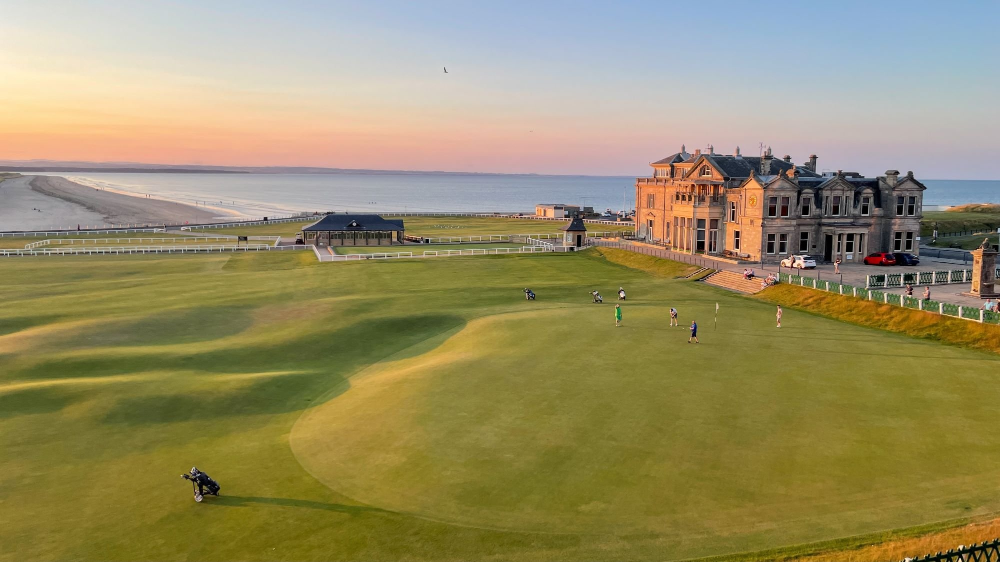
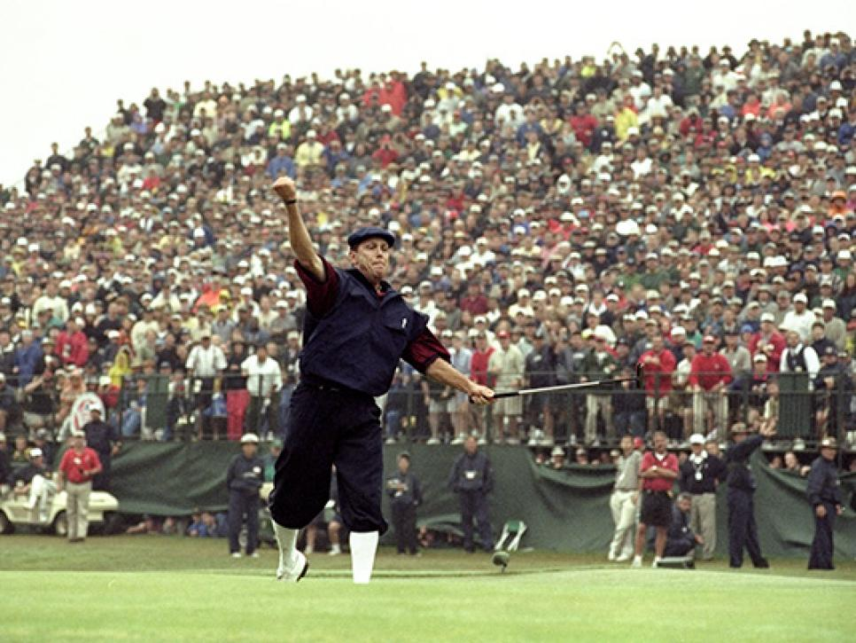
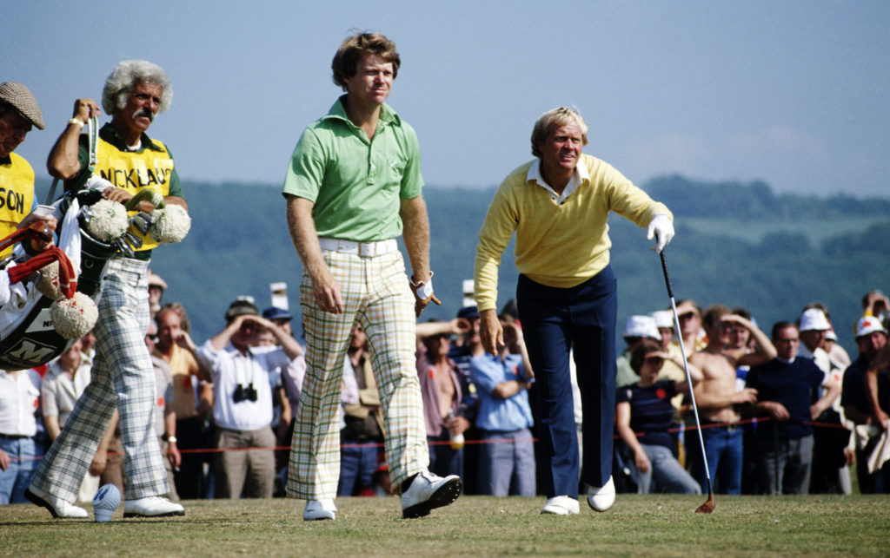
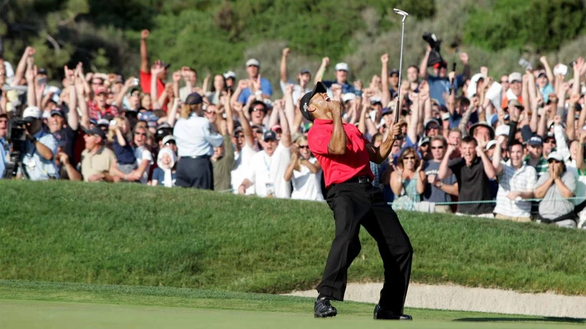
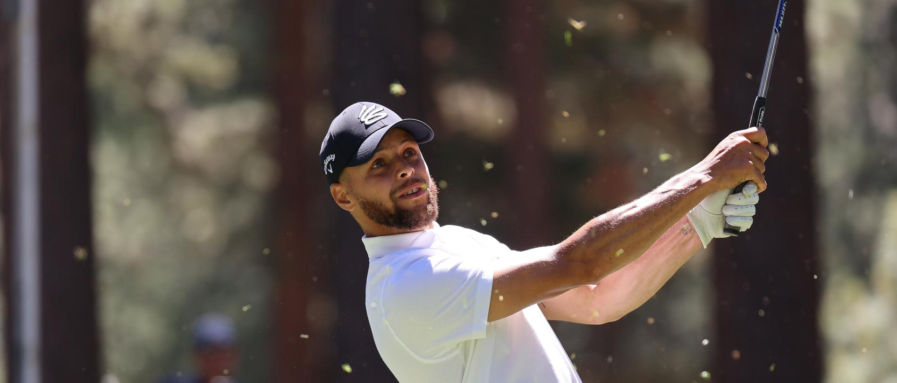

Step onto the virtual fairways and dive into the rich tapestry of golf's history. From the iconic greens of Augusta to the windswept links of St. Andrews, our collection of golf stories offers a front-row seat to the sport's most unforgettable moments. Get ready to relive legendary shots, epic showdowns, and historic victories that have left an indelible mark on the game we cherish. Whether you're a seasoned golfer or just love a good tale, join us as we celebrate the timeless magic and enduring legacy of golf.
The Old Course at St. Andrews
St. Andrews, nestled along the windswept shores of Scotland, holds a special place in the heart of every golfer as the "home of golf." The Old Course at St. Andrews, with its storied history dating back to the early 16th century, stands as a testament to the enduring legacy of the game. Generations of golfers have walked its hallowed fairways, testing their skills against the timeless challenges it presents.

Glory at Pinehurst
Payne Stewart's dramatic 15-foot par putt on the final hole of the 1999 U.S. Open at Pinehurst No. 2 secured his victory and etched his name into golfing lore. Stewart's celebration, punctuated by his iconic fist pump and knickerbockers, remains an enduring image in golf history.
Duel in the Sun
The "Duel in the Sun" at the 1977 Open Championship at Turnberry stands as a timeless testament to golfing greatness. Tom Watson and Jack Nicklaus, two of the game's most revered figures, engaged in a mesmerizing battle over four days that captivated the world. Shot for shot, birdie for birdie, they traded blows in a display of skill and resilience, with neither giving an inch. In the end, it was Watson who emerged victorious, sinking a memorable birdie putt on the 18th hole to secure the title and etch his name in golfing lore. This epic duel remains a shining example of the drama, intensity, and sportsmanship that define the sport of golf at its highest level.
Miracle at Augusta
Tiger Woods' incredible shot at the Masters in 2005 on the 16th hole is etched into the annals of golfing history as one of the most iconic moments in the sport. Facing a daunting downhill chip shot from the back of the green, Woods displayed nerves of steel and unparalleled skill as he delicately navigated the ball towards the hole. With the world watching in awe, the ball seemed to hang in the air for an eternity before gracefully descending and rolling inexorably towards the cup. As it approached the edge, it paused momentarily, teasing the spectators with anticipation, before defying gravity and defiantly dropping into the hole to raucous cheers from the crowd. Woods' reaction, a euphoric fist pump and a beaming smile, mirrored the collective astonishment and admiration felt by all who witnessed this moment of golfing brilliance. It was a testament to Woods' unrivaled talent and his ability to rise to the occasion when the stakes were highest, forever cementing his legacy as one of the greatest golfers to ever grace the fairways of Augusta National.
Swish on the Green
In a remarkable display of skill beyond the basketball court, NBA superstar Steph Curry achieved the seemingly impossible by sinking a hole-in-one during a round of golf. With precision and finesse reminiscent of his on-court wizardry, Curry launched his tee shot on the designated par-3 hole, sending the ball soaring through the air with pinpoint accuracy. As it descended towards the green, anticipation mounted among onlookers, only to erupt into jubilant celebration as the ball found its mark, dropping cleanly into the cup. Curry's hole-in-one showcased not only his athletic prowess but also his versatility and mastery of another sport, leaving golf enthusiasts and basketball fans alike in awe of his extraordinary talent.
· Images by Golf Magizine